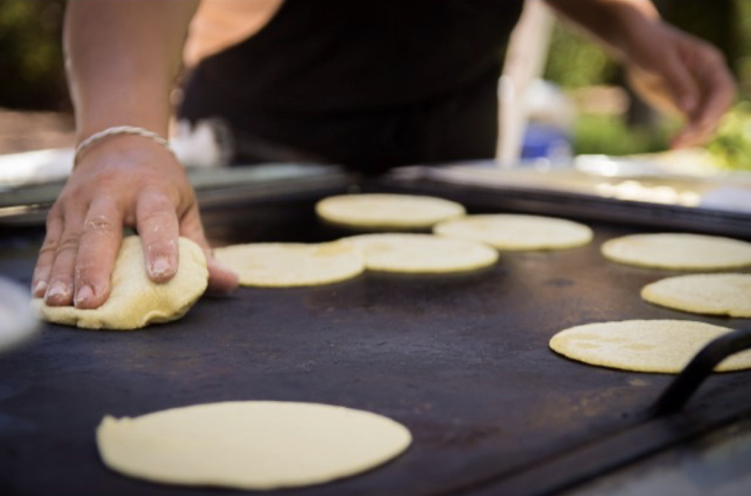

Our Story

Tasty. Authentic. Real Mexican food.
Located in the heart of Lemon Grove, CA, Sabor Mexican Grill prides itself in being different from the rest. With flavorful food and great customer service, you will feel right at home at this hole-in-the-wall eatery. We offer a variety of authentic Mexican dishes like homemade tamales, fresh caldos (soups), as well as typical street food like carne asada fries and california burritos. A customer favorite is the mini T.J. style tacos that are wrapped with freshly made corn tortillas. In 2006, owners Sonia and Carlos as well as their family opened up Sabor in hopes to serve authentic and fresh food that you couldn't find at any typical taco shop. With years of resturaunt experience, the couple decided it was time for them to show their city what they had to offer. They pride themselves in serving their community delicious food at a great price!